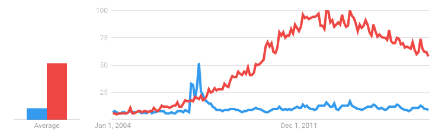
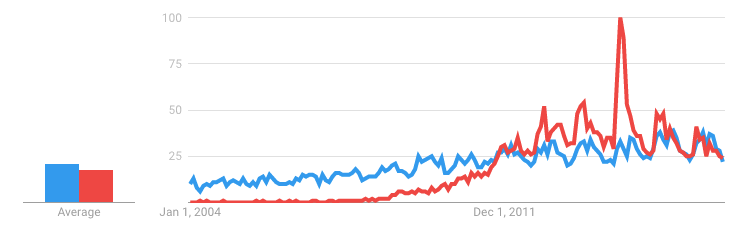
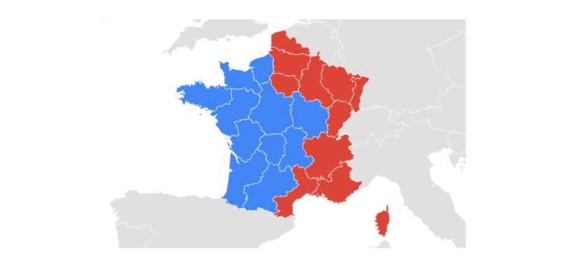

This is a look at the Google searches for "madeleine cake" versus "cupcake" from January 2001 to June 2017 (using Google Trends).
As expected, cupcakes are way more popular than madeleines in the US.
World wide, madeleines used to be as popular as cupcakes but it didn't last.
Madeleines used to be way more popular as cupcakes, but the two are now pretty close.
France seem to be divided between madeleine lovers and cupcake lovers.
